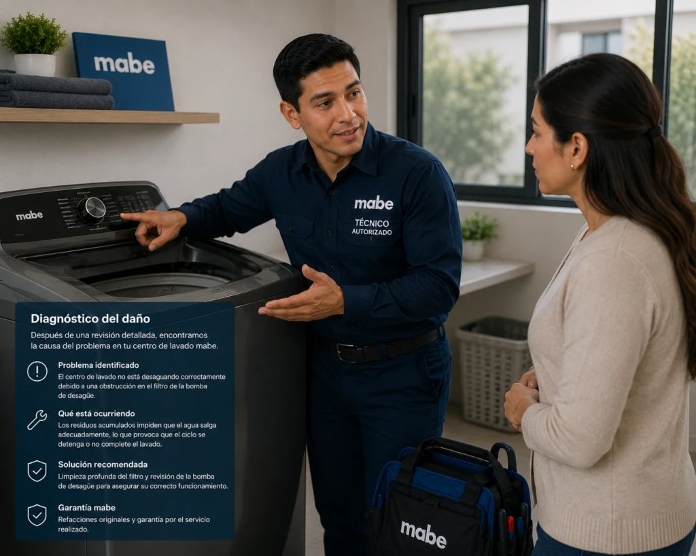
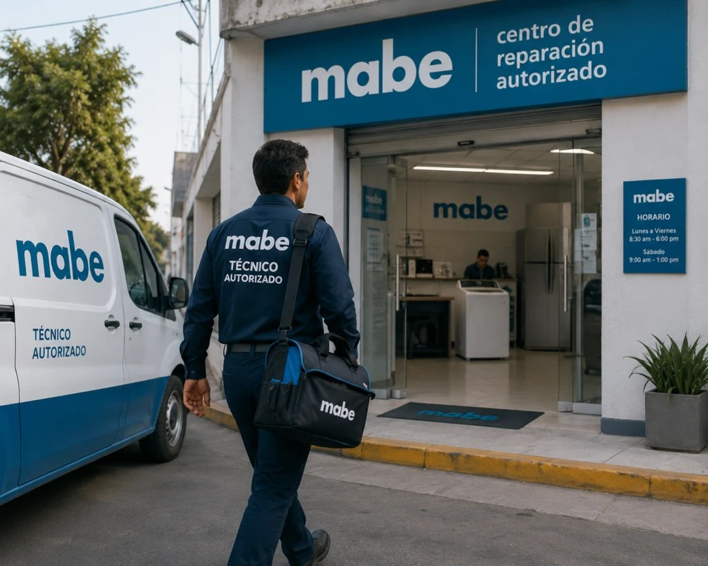

Reparación de refrigeradoras, lavadoras, secadoras, cocinas, hornos y torres de lavado Mabe. Diagnóstico honesto antes de reparar, técnicos con experiencia específica en la marca, y cobertura en 3 zonas de Ecuador.
La forma más rápida de agendar: escríbenos ahora y te confirmamos disponibilidad para tu zona en minutos, sin llamadas ni esperas.
Cada tipo de equipo tiene su propia página con fallas comunes, mantenimiento, instalación y repuestos.

Diagnóstico y reparación de refrigeradoras Mabe: No Frost, Frost Free, French Door y side by side, con revisión del sistema de enfriamiento, sellado y consumo eléctrico.
Ver servicio
Reparación de lavadoras Mabe automáticas de carga superior e inferior: fugas, vibración excesiva, fallas de centrifugado y tarjetas de control.
Ver servicio
Servicio técnico para secadoras Mabe de ropa: fallas de calentamiento, tambor que no gira, tiempos de secado excesivos y limpieza de ductos de ventilación.
Ver servicio
Reparación de torres Mabe / centros de lavado (lavadora y secadora en un solo cuerpo): el electrodoméstico que más se daña y el más buscado para reparar en Ecuador, con diagnóstico independiente de cada función.
Ver servicio
Reparación de cocinas Mabe a gas y eléctricas: quemadores que no encienden, horno que no calienta parejo, fugas de gas y paneles de control, con revisión de seguridad incluida en cada visita.
Ver servicio
Reparación de hornos Mabe empotrados e independientes: fallas de calentamiento, encendido, iluminación interior y sellado de puerta, con diagnóstico específico para modelos eléctricos y a gas.
Ver servicioCada zona tiene su propia dinámica de acceso y tiempos de respuesta. Elige la tuya para ver el detalle.
Compara tu síntoma con las fallas más comunes de refrigeradoras, lavadoras, secadoras, cocinas, hornos y torres Mabe en Ecuador, con nivel de urgencia, antes de llamar.
Cuéntanos por WhatsApp qué electrodoméstico Mabe presenta la falla y en qué zona te encuentras.
Coordinamos fecha y hora según tu zona, normalmente dentro de 24 a 48 horas.
El técnico revisa el equipo y te explica la causa real antes de reparar nada.
Ejecutamos la reparación con repuestos de calidad y garantía sobre el trabajo.
El mismo estándar de atención, tenga tu equipo la falla que tenga.
El técnico llega puntual, identificado y en un vehículo con la imagen de Servicio Mabe, listo para revisar tu refrigeradora Mabe, lavadora, secadora, cocina, horno o torre de lavado en Guayaquil.

Antes de tocar una sola pieza, te mostramos qué falló y por qué, con palabras simples, para que decidas con información real y no con supuestos.
Ejecutamos la reparación con repuestos de calidad y garantía por escrito, con el mismo estándar de atención en cada visita, sin importar la zona.
Actuar apenas aparece una señal evita que una reparación pequeña se convierta en un reemplazo completo.
Somos Centro de Servicio Autorizado Mabe, enfocados exclusivamente en la marca. Esa especialización nos permite diagnosticar con precisión desde la primera visita, en vez de resolver por ensayo y error como hace un técnico que atiende cualquier marca.
Conócenos mejor

Aunque trabajamos a domicilio y coordinamos todo por WhatsApp, seguimos el protocolo de un Centro de Servicio Autorizado Mabe: técnico identificado, herramientas y repuestos organizados, diagnóstico documentado y garantía por escrito antes de cerrar cada visita en Guayaquil, Ecuador.
Conoce cómo trabajamosEscríbenos por WhatsApp o llama directamente. Respondemos de lunes a sábado, de 7:00am a 6:00pm.
Se dañó el dispensador de hielo de mi refrigeradora Mabe y en la misma visita identificaron que era la válvula, no el motor. Rápido y sin vueltas.
La refrigeradora hacía un ruido raro desde hacía semanas. Me explicaron que era el relé de arranque antes de cobrar nada. Quedó funcionando bien.
Mi lavadora vibraba muchísimo. Revisaron nivel y amortiguadores, cambiaron dos piezas y quedó silenciosa.
Se le dañó la tarjeta después de un apagón largo. La cambiaron y me explicaron cómo protegerla la próxima vez.

No todo ruido de refrigeradora es una falla grave. Te explicamos qué sonidos son normales y cuáles son señal de que necesitas revisión técnica pronto.
Leer artículo
La humedad de Ecuador favorece el moho y los malos olores en las lavadoras. Esta guía práctica te muestra qué revisar cada mes y cada seis meses.
Leer artículo
No toda falla justifica comprar una refrigeradora nueva. Te damos una guía objetiva basada en la edad del equipo y el tipo de reparación necesaria.
Leer artículoEscríbenos por WhatsApp y te confirmamos disponibilidad para tu zona en minutos.